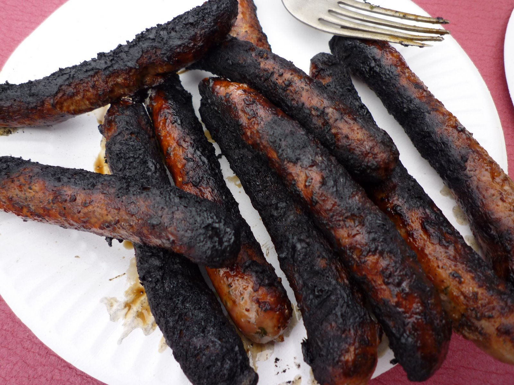

Flambe Sausages

Description
We're getting a bit more serious with this recipe.
Sausages have been a staple of back yard barbecues since 1666, when Herald the Simple accidentally
removed several fingers scything the fields of Putney and cooked them for his family to cover his clumsiness.
The story goes that Herald's family were suspicious of the sausages from the start because they
were still pretty raw and one had a copper ring on it.
While Herald frantically tried to explain away the finger prints on the 'sausages' by listing 3 reasons they
definitely weren't fingers - The fire was still flaming all over the joint and had spread among the cold area
of the back yard.
Eventually London itself was engulfed in fire. And those finger sausages were cooked darker than a blind man's
black pud. Perfection.
Now that you're aware of the history, here's the recipe for Flambe Sausages.
Ingredients
- 100% Beef Sausages Not fingers
- A B.A.C. of at least 0.15%
- 1 x Fire
- Some other people
- A back yard
- Several sun-damaged white plastic deck chairs
Instructions
- Put down the 440ml Woodstock and cola.
- Stride confidently back into the house to retrieve the packet of sausages.
- Fall over and break a plastic deck chair or 2 on the way. Ignore the wound on your leg.
- Retrieve the sausages from the plastic bag in the hall.
- Return triumphantly to your hungry guests 20 minutes later.
- Using your fingers, pry open the cling wrap that's holding the sausages hostage.
- Liberate the sausages on to the flaming bbq. Don't worry if one or 2 roll off.
- Pretend you know shit about cooking and poke at the sausages with a wooden spoon.
- Sit down and take a rest. You've earned it. The sausages will take a while anyway.
- Wake up.
- Get to your feet with a jolt and head to the bbq.
- Feel your heart start to beat again. The sausages are only mostly black. You've nailed it.
- Pass out the sausages to anyone still awake as though you were Jesus feeding the masses.
- Relax and enjoy a sausage while checking your social media.
- "Like" a recent video Dave-o posted called "Seasoning the sausages" that shows Dave-o pissing on your bbq while you were sleeping.
- Fuck it.